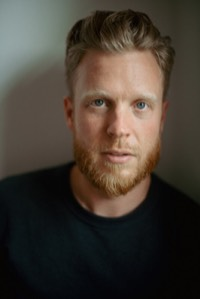

VICE
22 people whose festival biography mentions VICE. A mention can mean a job, a past job, a grant, a broadcast or an award: read the bio for which.

 Lyric CabralPanelist, filmmaker · 3 editions, 2015–2017
Lyric CabralPanelist, filmmaker · 3 editions, 2015–2017 Judith MatloffPanelist, workshop leader · 3 editions, 2017–2024Columbia Graduate School of Journalism
Judith MatloffPanelist, workshop leader · 3 editions, 2017–2024Columbia Graduate School of Journalism- Kate StonehillPanelist, filmmaker · 3 editions, 2022–2025
- Assia BoundaouiPanelist, filmmaker · 2 editions, 2017–2018

Thomas ClementPanelist, filmmaker · 2 editions, 2024–2026

 James BurnsFilmmaker · 2021
James BurnsFilmmaker · 2021
- Luisa ConlonFilmmaker · 2018
- Sally HaydenPanelist · 2019
 Kaila PhiloFestival team · 2023
Kaila PhiloFestival team · 2023 Bernardo Ruiz2024
Bernardo Ruiz2024
- Andalusia Knoll SoloffFilmmaker, panelist · 2019
- Miriam WellsPanelist · 2020
 Maia WiklerFilmmaker · 2026
Maia WiklerFilmmaker · 2026